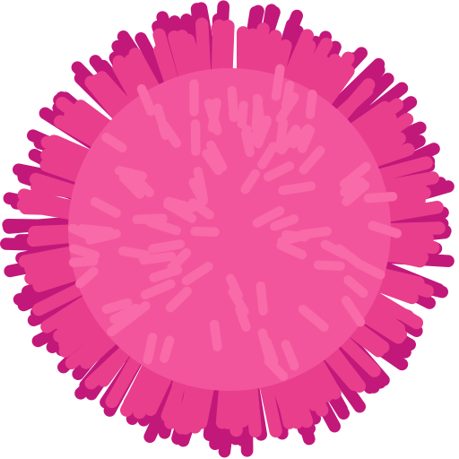

fuzzball
A terminal protocol, and the crate that speaks it.
Fuzzball is a small family of terminal extensions, implemented first in Mouser: structured keyboard events, cell-anchored graphics, silent shell actions and plugins. The fuzzball crate encodes and decodes it, with no dependencies, no I/O and no terminal library: bring your own reader and writer.
Version 1.0.0 · BSD-3-Clause · MSRV Rust 1.85

Why Fuzzball
One way to do each thing
No layered flag bits and no alternative spellings. One keyboard mode, one encoding of each graphics concept.
Survives multiplexers
Every message is a DCS string that travels through tmux and GNU screen passthrough unchanged. Nothing depends on files or shared memory.
Detectable
One capability query and a bounded wait tell an app whether Fuzzball is there, which version, and which subsystems.
Bounded
Terminals publish their limits in the capability reply, so applications can rely on them instead of guessing.
Structured key events
Press, repeat and release with physical key, logical key, modifiers, locks, text and IME, in a single opt-in mode.
Graphics on the text grid
Chunked uploads, cell-anchored placements, delete and query, with defined erase and reflow rules.
Silent shell actions
A shell integration can change directory without a visible
cd, keeping the line being edited. Works over ssh, tmux and screen.User-approved plugins
Programs in the terminal ask to become plugins; the terminal asks the user with its own UI. Remote hosts are untrusted by default.
Small, stable crate
No dependencies, no I/O. 1.x keeps the wire format and API compatible, and golden-byte tests lock every message it writes.
Get the crate
Cargo
cargo add fuzzballor in Cargo.toml:
[dependencies]
fuzzball = "1"Version 1.0.0. Within 1.x there are no breaking changes to the wire format or the API.
Links
- crates.io/crates/fuzzball
- docs.rs/fuzzball — API docs
- github.com/WeirdBrains/fuzzball — source
- Examples
Decode key events
use fuzzball::{Decoder, Item};
use fuzzball::keyboard::KeyEvent;
let mut d = Decoder::new();
d.push(input);
while let Some(item) = d.next() {
if let Item::Message(m) = item {
if let Some(ev) = KeyEvent::from_message(&m) {
println!("{:?} {:?}", ev.key, ev.text);
}
}
}The spec
Every message shares one frame: a DCS string with the private marker = and the family tag Fz, then a one-letter subsystem and verb.
ESC P = F z <subsystem> <verb> ; <params> [: <payload>] ESC \Common (
c)Framing, capability negotiation, versioning, error replies, security rules, conformance and migration.
Keyboard (
k)One mode of structured key events, enabled per screen. While it is on, every press, repeat and release is one message.
Graphics (
g)Upload, place, delete and query images. Placements are text-grid objects; limits are advertised.
Shell actions (
s)Silent actions such as change directory, sent on the shell's input and answered with a reply. Integrations for zsh, bash and fish.
Plugins (
p)Hello, query and bye. The terminal asks the user before granting; grants are per tab.
Wire format
Exactly what implementations emit today, where it is more specific than the drafts.
The spec source lives in the crate repo: github.com/WeirdBrains/fuzzball/docs.